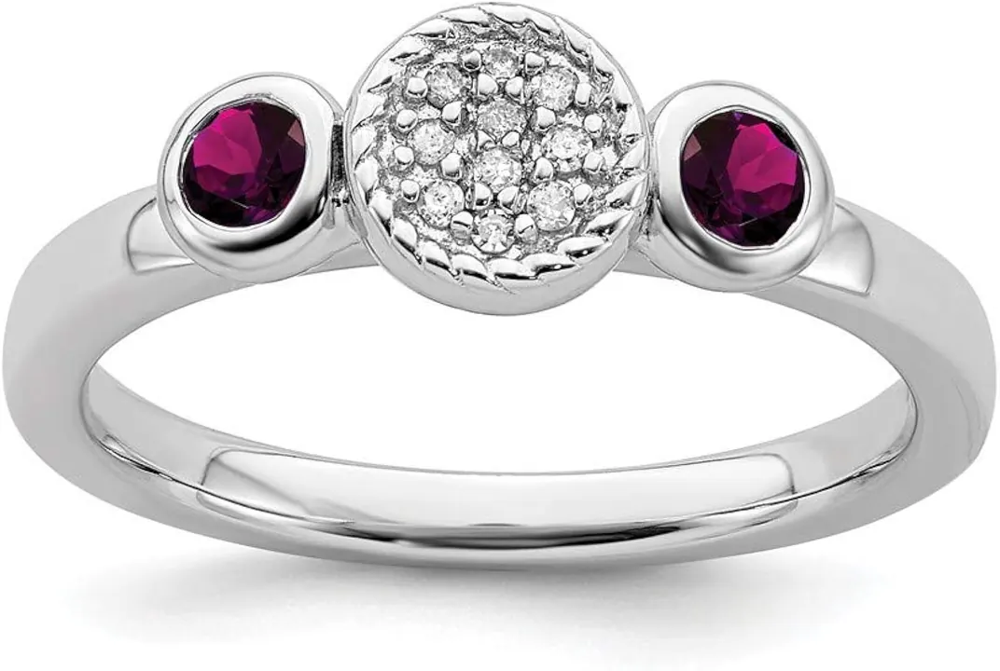

鑲嵌工藝：爪鑲、包鑲與密釘鑲的學問
同一顆鑽石，用爪鑲能看起來大一倍，用包鑲能安全一百倍——鑲嵌不是裝飾，是工程。

核心定義
鑲嵌（setting）是固定寶石的工藝系統，主流有四大類：爪鑲（prong）、包鑲（bezel）、密釘鑲（pavé）、夾鑲（channel）——每種工藝決定了寶石的安全性、視覺大小與價格。
一句話記住：爪鑲讓光進得最多（最閃）、包鑲讓石頭最安全（最穩）、密釘鑲讓碎鑽鋪滿（最華麗）——沒有最好，只有最適合。
特徵與分類
| 工藝 | 結構 | 優點 | 風險 | 適合 |
|---|---|---|---|---|
| 爪鑲 | 4/6 爪夾住寶石 | 光線充足、顯大 | 爪磨損易掉石 | 單顆主石 |
| 包鑲 | 金屬邊圍住寶石 | 最安全、復古 | 遮光、顯小 | 日常佩戴、男戒 |
| 密釘鑲 | 碎鑽密集排列 | 華麗、連續閃光 | 易積垢、難修 | 戒指肩部 |
| 夾鑲 | 兩側金屬槽夾石 | 平整、線條俐落 | 邊角易受損 | 結婚對戒 |
挑選要點：爪鑲檢查爪的粗細與貼合度、包鑲檢查邊緣是否緊密、密釘鑲檢查釘珠是否完整——每一項都直接關係寶石會不會掉。
科學原理
鑲嵌的力學核心是「把壓力集中在幾個點」：爪鑲的 4 根爪以彈性變形夾緊寶石腰稜——太緊會應力裂石（尤其祖母綠），太鬆會鬆動掉石。所以爪鑲寶石要定期檢查爪尖。
包鑲則用金屬邊「包住」寶石四周——壓力分布均勻，抗震性最佳；但金屬邊會遮擋側面光線，讓同一顆石頭看起來更小。工藝選擇，本質是光學與安全的取捨。
鑑定與鑑別方法
- 檢查爪尖：是否貼合寶石腰稜、有無勾衣
- 檢查包邊：邊緣有無縫隙、翹起
- 檢查密釘：釘珠是否完整、有無脫落
- 輕搖寶石：固定是否鬆動
- 檢查內襯：是否有墊底片（墊色增亮）
市場行情與保養建議
工費行情（2026 年台灣參考）：爪鑲工費新台幣數百至數千元、包鑲與夾鑲約千元級、密釘鑲按顆計價——鑲嵌工藝費可佔整件成品成本的 10–40%，複雜的密釘滿鑲甚至更高。
提醒：戒台金屬（14K/18K/鉑金）與鑲嵌工藝是「隱形成本」——同樣的鑽石，不同戒台與工藝，成品價差可達一倍。價格僅供參考，非投資建議。
常見誤區
工藝費看複雜度而非類型——簡單四爪可能比精細包鑲便宜；密釘滿鑲才是最貴的。
爪數多≠更安全——關鍵在爪的粗細與貼合。四爪若設計精良，比鬆垮的六爪穩固得多。
冷知識
1886 年蒂芙尼推出六爪鑲（Tiffany Setting）——它把鑽石「舉高」讓光從四面八方進入，成為訂婚戒的黃金標準。
中世紀歐洲的寶石多用包鑲——因為當時的爪鑲技術不成熟，包鑲才能保證寶石不掉落。
反直覺觀點
同一顆 1 克拉，包鑲視覺上可能比爪鑲小 10–20%——安全與顯大，魚與熊掌。
爪尖會磨損、勾衣、鬆動——爪鑲戒每半年到一年應檢查一次。保養工藝，比選購工藝更重要。